论文概览：一分钟看懂SANA-WM
SANA-WM 是NVIDIA在2026年5月推出的高效开源世界模型。仅有2.6B参数，却能原生生成一分钟级别的720p高保真视频，并实现精确的六自由度（6-DoF）相机轨迹控制。它的核心设计理念是"效率优先"——在数据、训练和推理三个维度同时追求极致效率。
现有分钟级世界模型通常面临三大困境：需要大规模工业级模型（LingBot-World使用14B+14B双模型）、海量训练数据、以及多GPU推理（8卡H100才能运行）。SANA-WM以不到十分之一的参数量和单GPU推理能力，在相机控制精度上全面超越这些基线，同时提供高达36倍的吞吐量提升。
训练：仅需213K公开视频片段 + 64块H100训练15天。推理：单H100（51.1GB）即可生成60秒720p视频；蒸馏变体在单张RTX 5090上仅需34秒。这一效率水平使得学术团队和小型实验室也能开展分钟级世界模型研究。
图：SANA-WM四大核心设计支柱及关键性能指标概览
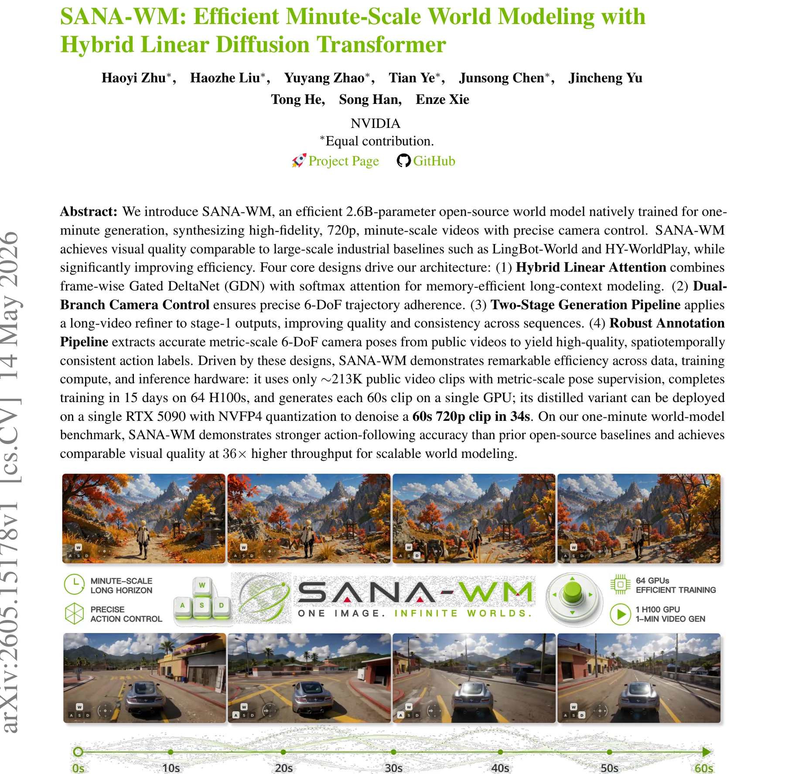
Figure 1 | SANA-WM演示：从一张图片和动作轨迹，生成一分钟级720p可控世界。64 GPU训练，单GPU推理。
SANA-WM论文明确指出，从短视频生成器蒸馏出长视频模型是一个"诱人但有缺陷"的替代方案。短视频教师模型在分钟级场景持久性和轨迹跟随方面提供的监督信号极其有限。SANA-WM选择原生训练一分钟级模型，虽然训练成本更高，但避免了蒸馏带来的质量天花板，为后续的数据和模型扩展保留了更大的提升空间。
系统架构：混合GDN/Softmax设计
SANA-WM基于SANA-Video构建，采用20层Transformer块（$d_{model}=2240$，20个注意力头，$D=112$每头维度）。其核心创新在于混合GDN/Softmax注意力：将15个帧级Gated DeltaNet (GDN) 块与5个标准Softmax注意力块交替排列（位于第3、7、11、15、19层），在效率和长距离建模能力之间找到最优平衡。
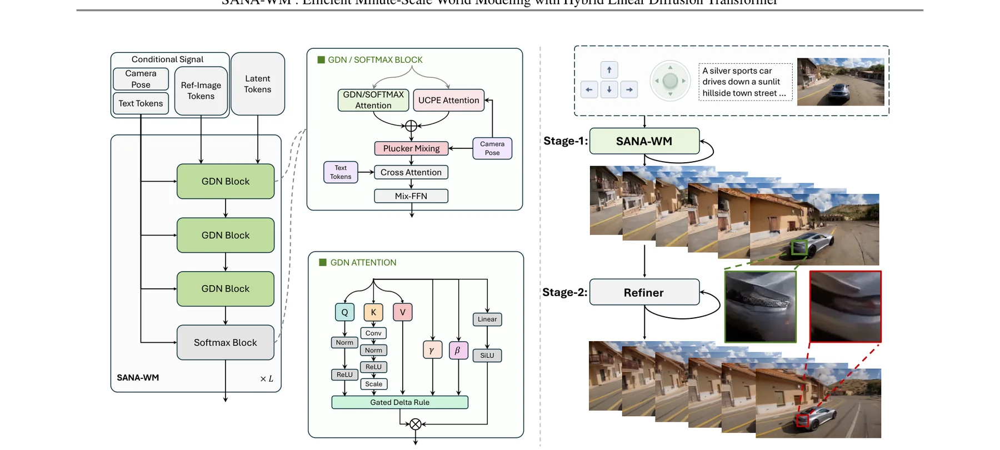
Figure 2 | SANA-WM架构总览。文本、视频和位姿Token交替通过GDN和Softmax注意力块。几何感知组件（UCPE注意力和Plucker混合）被集成以实现位姿条件生成，后跟细化器提升视觉质量。
LTX2-VAE：高压缩率编码器
SANA-WM用LTX2-VAE替换了基线VAE，利用其卓越的时空压缩比。LTX2的表示比ST-DC-AE小2.0倍，比Wan2.1-VAE小8.0倍。这使得720p一分钟视频的潜在表示变得可计算。LTX2 VAE使用$C=128$潜在通道，每8个原始帧压缩为1个潜在帧。
LTX2-VAE的高压缩率是SANA-WM能在单GPU上进行分钟级推理的关键前提——它将潜在Token数控制在可计算范围内。但高压缩也意味着每个潜在帧必须承载更大的语义信息密度，对模型的建模能力提出了更高要求。混合GDN/Softmax架构正是为了应对这一挑战而设计：GDN提供高效的信息积累，Softmax确保关键信息不被遗忘。
混合GDN/Softmax的层间交替策略
SANA-WM在训练稳定后，将每第四个块替换为标准Softmax注意力（位于第3、7、11、15、19层），同时保留原始QKV和输出投影。这一设计的核心逻辑是：
GDN块 (75%)
提供高效的帧级循环上下文聚合，内存 $O(D^2)$ 恒定，支持分钟级建模而不OOM
Softmax块 (25%)
提供精确的长距离召回能力，锚定长期空间一致性，增强场景记忆
注意力Sink机制
推理时首个潜在帧作Sink Token，局部窗口注意力保持内存恒定
图：混合GDN/Softmax架构设计 — GDN提供恒定内存的帧级循环，Softmax提供精确长距离召回，两者交替实现分钟级建模
Softmax注意力虽然复杂度高，但它的"精确注意力"能力是线性注意力无法完全替代的。在长视频生成中，模型需要偶尔"回看"远处帧的信息以维持场景一致性。SANA-WM的混合设计本质上是在"高效近似"（GDN）和"精确计算"（Softmax）之间找到了最优平衡点。实验表明，全GDN或全Softmax都次于这种混合方案。
混合注意力：GDN + Softmax的优雅融合
SANA-WM在长上下文建模上面临的根本挑战是：标准Softmax注意力的内存和计算复杂度随上下文长度二次增长。对于一分钟720p视频，纯Softmax注意力将导致OOM。因此，SANA-WM引入了帧级Gated DeltaNet (GDN)作为高效替代方案。
从累积线性注意力到GDN的演进
SANA-Video使用的累积线性注意力虽然内存恒定，但存在根本缺陷：缺乏显式衰减或显著性机制。陈旧特征与新特征积累相同权重，在分钟级别会导致状态漂移和训练不稳定。
状态 $A_t \in \mathbb{R}^{D \times D}$ 每帧更新一次，内存恒定，但无衰减机制 — 分钟级会漂移
引入衰减门 $\gamma_i \in (0, 1]$ 和更新门 $\beta_i \in [0, 1]$，实现选择性遗忘和更新
帧级GDN：SANA-WM的关键创新
标准GDN每个Token执行一次循环步骤。SANA-WM将其扩展为每潜在帧执行一次，一次性消费帧内所有$S$个空间Token。这不仅减少了循环开销，更利于GPU并行化。
状态保持 $D \times D$，每步处理整个空间帧的所有 $S$ 个Token
代数稳定性：空间爆炸问题的解决
由于 $S_t$ 反复乘以 $M_t$，变换应该是非扩张的。但朴素实现中，$I - A_t$ 的特征值可以因 $O(S)$ 的迹而变得大于1，导致训练不稳定。SANA-WM提出关键的键缩放策略：
$1/\sqrt{D}$ 匹配Token级GDN的L2键归一化，额外的 $1/\sqrt{S}$ 对空间Token取平均
RMS归一化键 + $\beta \in [0,1]$ + 缩放因子确保转移矩阵非扩张
图：不同键缩放策略下的训练稳定性对比。只有 $1/\sqrt{DS}$ 缩放确保稳定收敛。
# Frame-wise GDN with algebraic stabilization (Eq. 3-5)
def frame_gdn_step(S_prev, Q_t, K_t, V_t, gamma_t, beta_t, D, S):
# Key stabilization: 1/sqrt(D*S) scaling
K_bar = relu(rms_norm(K_t)) # [D, S]
K_hat = K_bar / sqrt(D * S) # 键缩放 (Eq. 5)
# Per-token update gates
beta = diag(beta_t) # [S, S] 对角矩阵
# Transition matrix (Eq. 3)
M_t = gamma_t * (I - K_hat @ beta @ K_hat.T) # [D, D]
# Additive update
U_t = V_t @ beta @ K_hat.T # [D, D]
# State transition
S_t = S_prev @ M_t + U_t # [D, D], 内存恒定!
# Output
Q_hat = relu(rms_norm(Q_t))
O_t = S_t @ Q_hat # [D, S]
return S_t, O_t双向扫描与Chunk-Causal推理
训练时使用双向GDN：前向和反向时间扫描求和，获取完整上下文。推理时使用Chunk-Causal模式：将潜在帧分块，前向扫描保持全局，反向扫描在块边界重置。这让每个块拥有局部未来上下文而无信息泄漏。
双向GDN在训练时提供完整上下文，但推理时无法使用（需要未来帧）。纯因果（Causal）模式每个块只能看到过去，质量受限。Chunk-Causal模式巧妙地在块内引入反向扫描，为每个块提供"近未来"上下文，同时保持全局因果性。这种设计使得自回归推理时每个块的质量接近双向模式。
标准GDN每个Token执行一次循环步骤，对于有S个空间Token的帧，每帧需要S次状态更新。SANA-WM的帧级GDN将S次Token更新合并为一次矩阵运算，虽然单步计算量更大，但减少了循环开销且更利于GPU并行化。关键的$1/\sqrt{DS}$缩放确保了这种"大步"更新的数值稳定性。实验表明帧级GDN在质量上与Token级GDN持平，但训练效率提升约2倍。
双分支相机控制：粗细结合的6-DoF精确控制
精确的动作条件世界建模要求生成视频忠实跟随连续的动作轨迹，而非仅仅与文本提示对齐。SANA-WM采用双速率几何条件化设计：潜帧级UCPE分支捕获全局6-DoF姿态，原始帧级Plucker混合分支补偿每个VAE时间步内的精细运动。
粗粒度分支：Ray-Local UCPE
对于每个潜帧Token，SANA-WM构建光线局部坐标系。给定相机到世界坐标系变换 $T_c^{2w} = [R_t | o_t]$ 和内参矩阵 $A_t$，将对应像素反投影并变换到世界空间，得到光线中心 $o_t \in \mathbb{R}^3$ 和单位方向 $d_{t,s} \in \mathbb{R}^3$。然后构建光线局部基，将相机位姿变换分解为几何通道和标准RoPE通道：
$D_i$ 为光线局部齐次变换矩阵，$\oplus$ 表示UCPE和RoPE通道组的块对角组合
细粒度分支：Raw-Frame Plucker混合
粗UCPE分支在潜帧速率操作，但每个潜在Token汇总了8个原始帧及其各自的相机位姿。对于原始帧$r$和像素$p$，SANA-WM计算逐像素Plucker光线图 $\rho_{r,p} = (d_{r,p}, o_r \times d_{r,p}) \in \mathbb{R}^6$。8个原始帧的光线图被打包为48通道张量，通过零初始化3D Patch嵌入器注入。
图：SANA-WM双分支相机控制架构 — UCPE粗粒度 + Plucker细粒度的融合设计
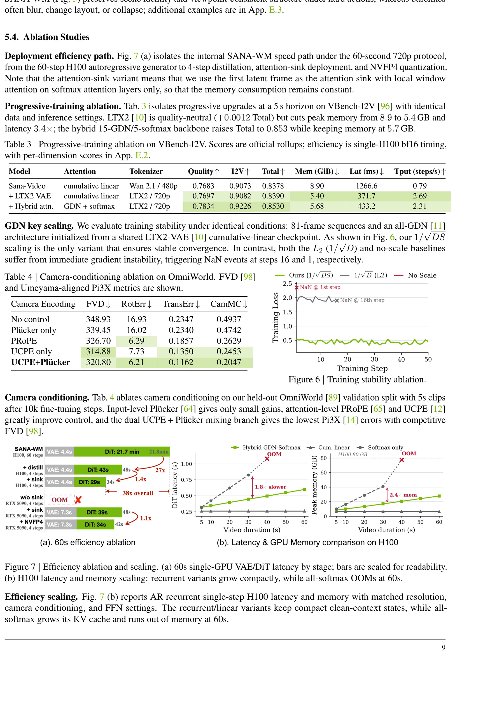
Table 4 | 相机条件消融（OmniWorld）。双分支UCPE+Plucker达到最低Pi3X误差（RotErr 6.21, TransErr 0.1162）和竞争力FVD。
LTX2-VAE将每8个原始帧压缩为1个潜在帧。如果仅在潜帧速率控制相机，每8帧之间的运动细节会丢失。UCPE分支负责全局轨迹的宏观结构（如转弯方向、移动距离），Plucker分支则补偿每帧之间的微观运动差异（如相机抖动、微调视角），两者互补实现精确的6-DoF跟随。
UCPE和Plucker分支都采用零初始化投影，确保新增组件在训练初期不影响预训练模型的行为。这是渐进式微调中常见的"identity initialization"策略。对于SANA-WM这种在有限数据（213K）上训练的场景尤为重要——如果新组件在训练初期就干扰预训练权重，可能导致灾难性遗忘。零初始化让模型在训练初期完全依赖已学到的能力，逐步学习新的相机控制能力。
数据管线：213K高质量训练语料
训练相机可控的世界模型需要具有可靠几何、多样运动和长时域场景覆盖的数据。SANA-WM构建了一套鲁棒标注管线，从7个开源视频源重新标注度量尺度相机位姿，产出213K片段语料。
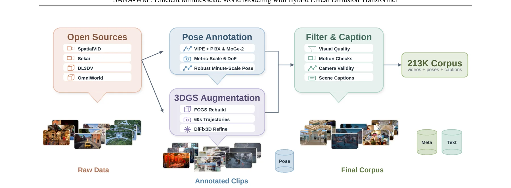
Figure 3 | 数据构建管线。收集开源视频和静态3D场景，标注度量尺度相机位姿，用3DGS渲染增强DL3DV场景，过滤/标注生成213K片段训练语料。
位姿标注引擎：VIPE + Pi3X + MoGe-2
SANA-WM的位姿标注基于VIPE构建，但替换了其原始深度估计后端。原始VIPE使用Metric3D-Small进行单帧深度估计，在长视频上不稳定。SANA-WM的改进方案：
Pi3X
多帧一致3D结构恢复，解决长视频深度不一致问题
MoGe-2
逐帧度量尺度锚定，提供精确的绝对尺度
融合策略
最小二乘对齐 + EMA时序平滑 + 逐帧内参优化
Table 1 | 过滤后的训练数据概览。包含7个数据源，共计212,975个训练片段。
3DGS增强管线
DL3DV仅包含静态3D捕获而非原生一分钟视频。SANA-WM为每个场景拟合一个FCGS 3D高斯重建，设计多样的一分钟相机路径（包括轨道、螺旋、推拉、飞行、随机走等），渲染长视频并用DiFix3D细化。每场景生成40条候选轨迹：10条贴近原始训练视角，30条来自多样运动族。
过滤与标注策略
SANA-WM遵循SANA-Video的基本视觉过滤（美学质量、运动幅度、光流一致性、场景切换检测），并增加相机特有过滤器：视场角（$25^\circ$-$120^\circ$）、焦距一致性（$f_x/f_y$差异 $\le 0.20$）、位姿平滑度和尺度变化（变异系数 $\le 2.0$）。对于标注，使用场景静态描述而非动作描述，防止文本泄露轨迹监督。
SANA-WM的位姿标注管线设计精巧：(1) Pi3X保证长时间序列的深度一致性；(2) MoGe-2提供精确度量尺度，避免"相对尺度"漂移；(3) 逐帧内参优化处理网络视频的非方形像素和变焦距；(4) 3DGS增强将静态3D场景扩展为长视频数据。这套管线使得213K数据的质量远超同等规模的原始网络视频，是模型高效训练的基石。
当动作条件可用时，SANA-WM使用仅描述物体、布局和外观的场景静态字幕，避免包含"向左平移"或"向前移动"等相机动作语言。这迫使模型通过位姿分支而非文本分支学习运动控制，确保相机控制能力的独立性和泛化性。如果字幕包含运动描述，模型可能走捷径从文本学习运动，导致相机控制分支形同虚设。
训练策略与两阶段细化器
渐进式训练：四阶段递进
SANA-WM采用四阶段渐进式训练策略，从短片段到分钟级视频逐步扩展，引入架构组件的同时保持训练稳定性。
图：SANA-WM四阶段渐进式训练管线及关键超参数
Table 3 | 渐进式训练消融（VBench-I2V）。LTX2 VAE质量中性但效率大幅提升3.4x；混合注意力将Total提升至0.853。
Context-Parallel训练：紧凑通信
961帧训练需要Context-Parallel (CP)。SANA-WM的巧妙之处在于利用GDN仿射更新的代数性质：每个分片计算转移复合$C_p$和输入复合$H_p$，仅需通信紧凑摘要即可恢复精确初始状态。
all-gather紧凑摘要（而非完整激活），通信开销与分片内帧数无关
# Context-Parallel prefix composition for GDN
def cp_gdn_prefix(shard_states, shard_transitions, shard_inputs):
"""
shard_states: [P] 初始状态 S_start^(p)
shard_transitions: [P, T/P, D, D] 每分片的转移矩阵乘积 C_p
shard_inputs: [P, D, D] 每分片的输入复合 H_p
"""
P = len(shard_transitions)
# Exclusive prefix scan (Eq. 13)
S_bar = zeros(D, D) # S_0 = 0
start_states = []
for p in range(P):
start_states.append(S_bar) # S^(p)_start = S_bar_p
S_bar = S_bar @ shard_transitions[p] + shard_inputs[p]
# S_bar_{p+1} = S_bar_p * C_p + H_p
# Each shard computes: S^(p)_end = S^(p)_start * C_p + H_p
# Communication: all-gather [D, D] matrices (compact!)
return start_states961帧训练需要Context-Parallel (CP)。SANA-WM的巧妙之处在于利用GDN仿射更新的代数性质：每个分片计算转移复合$C_p$和输入复合$H_p$，仅需通信紧凑摘要（$D \times D$矩阵）而非完整激活即可恢复精确初始状态。这使得CP通信开销与分片内帧数无关，是GDN架构相比标准注意力在分布式训练中的独特优势。
两阶段细化器：截断Sigma流匹配
为进一步提升视觉质量，SANA-WM采用独立的第二阶段细化器，基于17B LTX-2模型，通过LoRA（rank-384）适配器微调。
$\sigma_{start} = 0.909375$，从含噪源点向高保真目标学习速度场
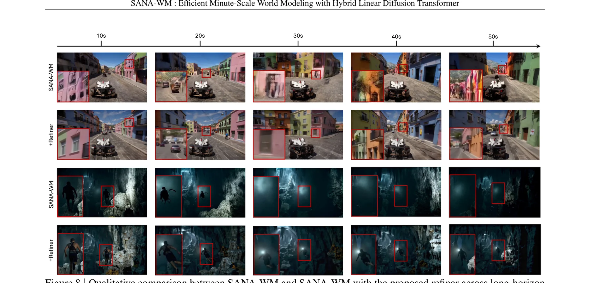
Figure 8 | SANA-WM与SANA-WM+细化器的定性比较。红框标注了细化器改善视觉保真度、物体结构和时序一致性的区域。
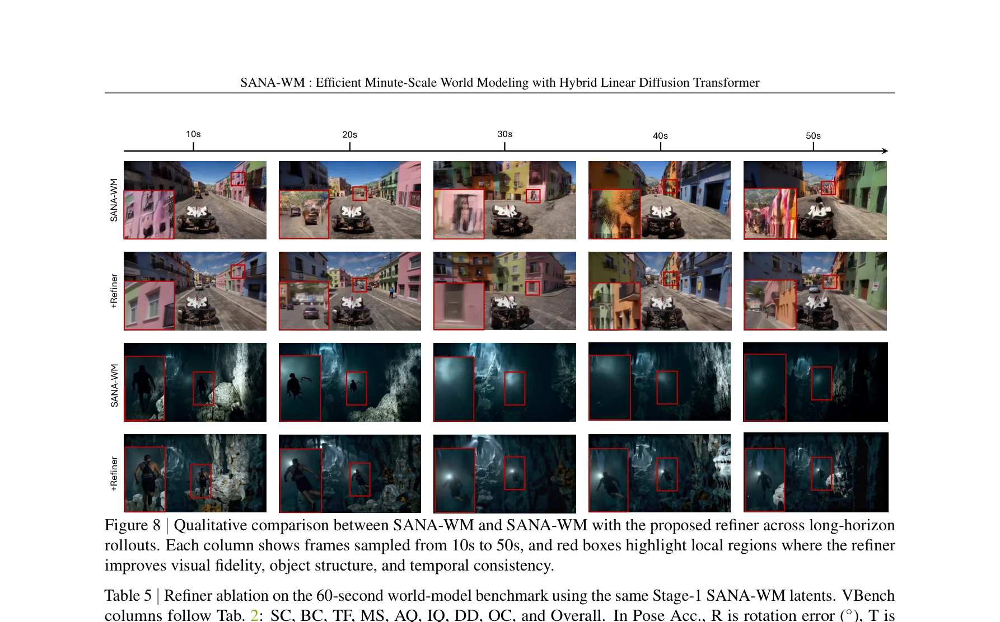
Table 5 | 细化器消融。原始LTX-2.3短视频细化器在分钟级别大幅降低感知质量；SANA-WM的长视频适配细化器显著改善VBench Overall和时序退化指标。
# Long-video refiner: truncated-sigma flow matching
class LongVideoRefiner:
def __init__(self, base_model="LTX-2", lora_rank=384):
self.model = load_model(base_model) # 17B LTX-2
self.lora = LoRA(rank=lora_rank, targets=["QKV_O", "FFN"])
self.sigma_start = 0.909375
self.sigmas = [0.909375, 0.725, 0.421875, 0] # 3-step distilled
def train_step(self, x_l, x_h, text, camera, ref_image):
# Perturb stage-1 latent
eps = torch.randn_like(x_l)
x_1 = (1 - self.sigma_start) * x_l + self.sigma_start * eps
# Sample noise level (shifted-logit-normal, truncated)
sigma_t = sample_truncated_logit_normal(max_val=self.sigma_start)
alpha = sigma_t / self.sigma_start
# Interpolate and predict velocity
x_t = (1 - alpha) * x_h + alpha * x_1
v_star = (x_1 - x_h) / self.sigma_start
# Reference conditioning (excluded from loss)
ref_tokens = encode(ref_image) # clean slice as KV anchors
input_seq = concat([ref_tokens, x_t])
v_pred = self.model(input_seq, sigma_t, text, camera)
loss = MSE(v_pred, v_star)
return lossTable 5的消融表明，直接将LTX-2.3原始细化器应用于60秒序列会导致质量大幅下降（VBench从80.62降至71.37），且相机控制精度也显著恶化。SANA-WM的长视频适配细化器通过LoRA在合成数据+真实视频上训练，成功将$\Delta IQ$从3.73降至1.17，证明了长视频细化需要专门的适配。
直接微调蒸馏后的few-step细化器不稳定。SANA-WM的策略是：在多步非蒸馏LTX-2基础上训练LoRA，然后零样本合并到蒸馏版。这将LoRA学到的长视频行为转移到蒸馏推理流程，同时保留蒸馏的高效采样计划（仅3个Euler去噪步）。最终，细化器以极低的额外延迟（约20%吞吐量下降）显著提升了视觉保真度。
实验结果：全面超越开源基线
评估基准
SANA-WM构建了一个60秒世界模型基准：80张由Nano Banana Pro生成的初始图像，覆盖游戏、室内、城市户外、自然户外四大场景类别（每类20张），每张图像配对Simple和Hard两种轨迹。
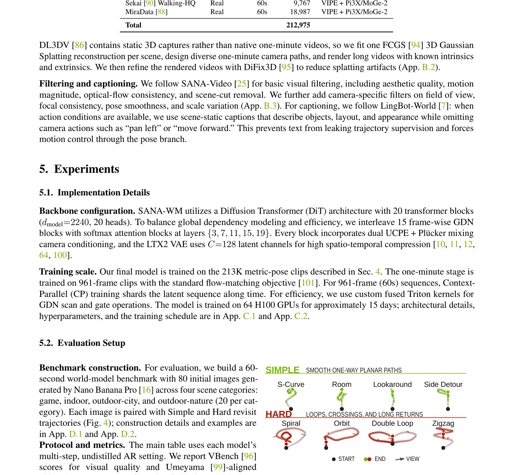
Figure 4 | 基准轨迹模板示例。BEV路径展示Simple（平滑单向平面路径）和Hard（环路、交叉、长程返回）两种难度。
主结果对比

Table 2 | 一分钟基准的定量比较。SANA-WM在动作跟随精度上全面领先，视觉质量可比LingBot-World（14B+14B），吞吐量提升36倍。
图：SANA-WM与主流基线在旋转误差、视觉质量和吞吐量上的对比
消融实验
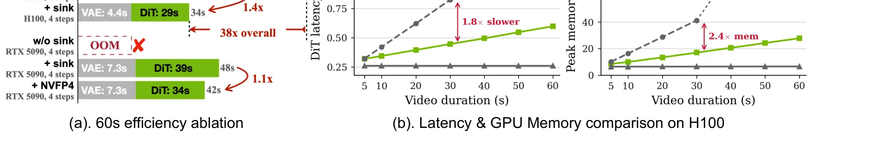
Figure 7 | 效率消融与扩展。(a) 60s单GPU延迟分布；(b) H100延迟和内存扩展：循环变体紧凑增长，全Softmax在60s时OOM。
Figure 7(b)清楚展示了GDN混合架构的核心价值：在序列长度从5s扩展到60s的过程中，GDN循环变体的内存增长近乎线性（因GDN状态保持$D \times D$恒定），而全Softmax的KV缓存呈二次增长并在60s处OOM。这一对比从实验层面验证了混合架构对于分钟级建模的必要性——没有GDN，单GPU推理根本不可能。
SANA-WM使用OpenAI Triton实现了融合内核，将RMSNorm、ReLU、键缩放、UCPE/RoPE准备和GDN循环扫描融合在一起，显著减少内存带宽瓶颈并支持autograd。这一系统级优化贡献了约1.5x至2x的效率提升，是工程实现的关键差异化。在世界模型领域，算法创新和系统优化同等重要。
定性比较
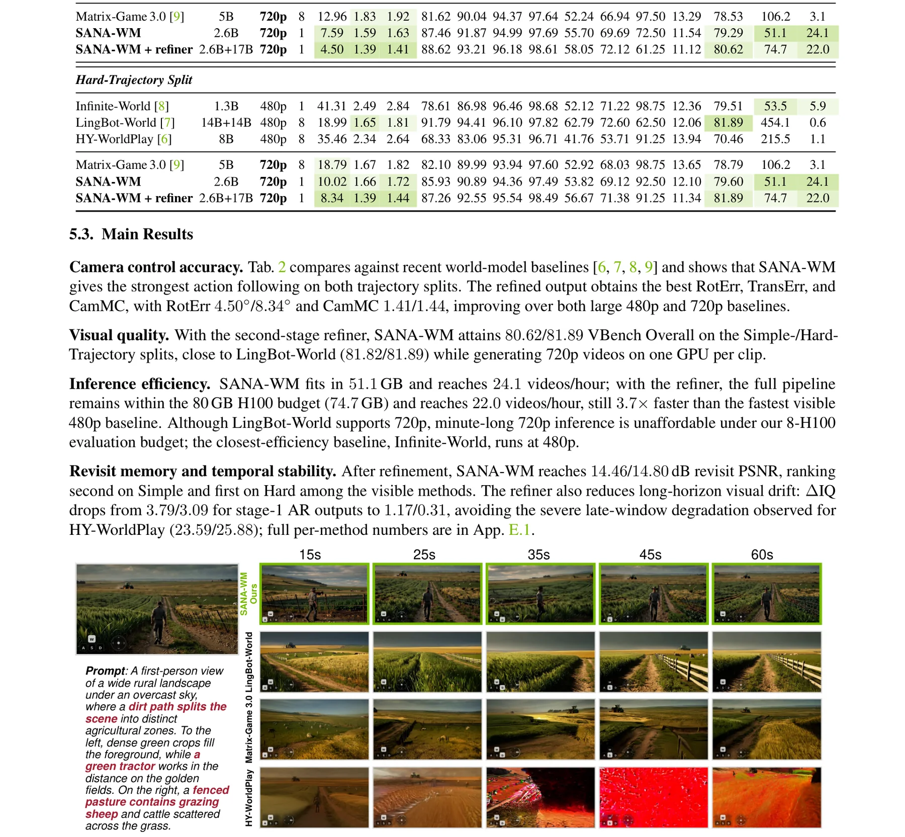
Figure 5 | 四个Hard-Trajectory 60秒视频的定性比较。绿框标注SANA-WM，左下角显示透明动作叠加。SANA-WM在困难动作下保持场景一致性和视角结构，而基线常出现模糊、布局变化或崩溃。
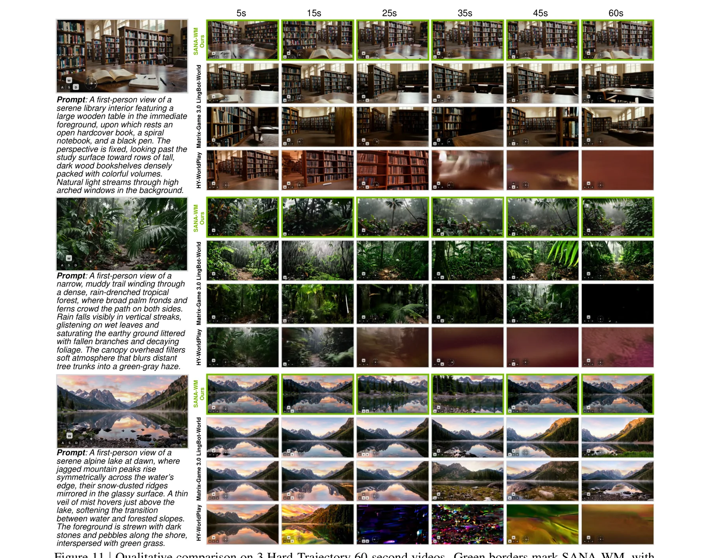
Figure 11 | 更多Hard-Trajectory 60秒视频定性比较。SANA-WM更好地保持全局布局和物体身份。
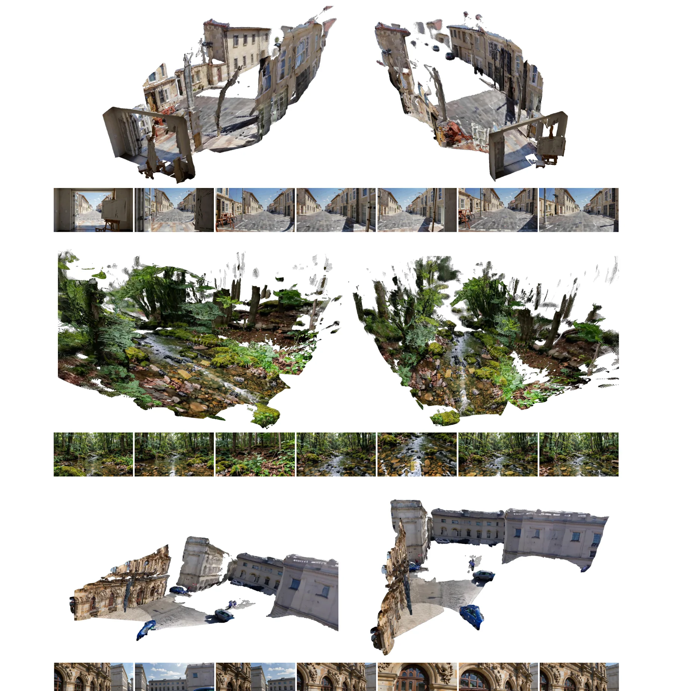
Figure 12 | SANA-WM生成视频的3D重建演示。恢复的结构和相机路径表明视频包含连贯的3D线索。
SANA-WM在60秒Hard-Trajectory视频中展示了更稳定的场景记忆能力——当相机执行大角度旋转、螺旋上升或环路返回时，场景布局和物体身份保持一致。相比之下，基线方法常在30-40秒后出现明显退化。这证明了混合GDN/Softmax架构在长时域建模上的优势。
深度洞察：关键设计决策解析
标准GDN每个Token执行一次循环步骤，对于有S个空间Token的帧，每帧需要S次状态更新。SANA-WM的帧级GDN将S次Token更新合并为一次矩阵运算，虽然单步计算量更大，但减少了循环开销且更利于并行化。关键的$1/\sqrt{DS}$缩放确保了这种"大步"更新的数值稳定性。
LTX2-VAE的表示比ST-DC-AE小2.0倍，比Wan2.1-VAE小8.0倍。正是这种激进压缩使得720p一分钟视频的潜在Token数变得可计算（在单H100的51.1GB内存内）。但这也意味着每个潜在帧承载更大的语义信息密度，对模型容量提出了更高要求——这解释了为什么2.6B参数是必要的最小规模。
Stage 4的部署路径依次为：60步H100自回归生成 $\to$ 4步蒸馏 $\to$ 注意力Sink（首个潜帧作Sink Token + 局部窗口注意力）$\to$ NVFP4量化。每一步都保持质量基本不变的同时显著降低延迟和内存，最终使RTX 5090上34秒生成60秒视频成为可能。这是一条精心设计的效率优化链。
DL3DV等数据集仅包含静态3D捕获。通过FCGS重建 + 多样轨迹渲染 + DiFix3D细化，SANA-WM将静态数据扩展为长视频训练数据。这种增强策略对于稀缺的带位姿标注长视频数据尤为重要，贡献了约15K额外训练片段。在数据稀缺的世界模型领域，这类增强策略可能是关键的竞争优势。
如果字幕包含"向左平移"等运动描述，模型可能从文本而非相机控制分支学习运动。使用场景静态字幕迫使所有运动信息通过6-DoF位姿分支传递，确保相机控制的独立性和泛化性。这是一个在数据层面确保模型行为的重要设计决策，体现了"数据决定模型行为"的工程哲学。
开放科研问题
GDN/Softmax混合比例的最优解是什么？
理论分析：SANA-WM使用75% GDN + 25% Softmax的固定比例。从信息论角度，GDN的$O(D^2)$状态压缩了历史信息，但压缩率随序列长度增加而降低。Softmax层的作用是"信息解压缩"——精确召回被GDN压缩掉的长距离信息。
调查方向：是否存在一种自适应机制，根据序列长度、场景复杂度或记忆需求动态调整混合比例？例如，在环路返回区域（需要更多场景记忆）增加Softmax层的比例，或使用门控机制动态选择每层使用GDN还是Softmax。
能否用线性注意力完全替代Softmax？
理论分析：GDN已经展示了强大的长程建模能力，但25%的Softmax层仍然不可或缺。核心瓶颈在于线性注意力的$D \times D$状态矩阵在表达能力上受限于秩约束——它无法精确存储任意的键-值对映射。
调查方向：是否存在一种增强型线性注意力机制（如改进的记忆检索、外部记忆模块、或高阶状态更新）能够在保持$O(D^2)$内存的同时完全消除Softmax依赖？RetNet、GLA等新架构是否提供了可行路径？
分钟级世界模型需要显式3D场景记忆吗？
理论分析：SANA-WM依赖隐式记忆（GDN状态和Softmax KV缓存）维持场景一致性。论文承认其缺乏显式3D场景记忆，这在环路返回场景中尤为明显——当相机返回先前访问过的位置时，模型需要"回忆"该位置的外观。
调查方向：融合NeRF/3DGS等显式3D表示作为外部记忆能否进一步提升环路返回时的一致性？如何设计高效的"写入-读取"机制，将生成的帧实时更新到3D记忆中？这可能是通往真正持久化世界模型的关键路径。
相机控制能否扩展到更丰富的动作空间？
理论分析：SANA-WM专注于6-DoF相机控制。但真正的交互式世界模型需要支持混合动作空间：相机运动 + 键盘/手柄输入 + 语言指令 + 物理交互。UCPE和Plucker的几何归纳偏置与自由形式语言条件之间存在本质张力。
调查方向：如何自然地扩展到混合动作空间？一种可能的路径是将不同模态的控制信号投影到统一的"动作嵌入空间"，然后通过类似UCPE的注意力机制注入模型。这需要设计新的动作表示和条件化架构。
数据效率的天花板在哪里？
理论分析：SANA-WM仅用213K数据（远少于工业模型的数百万视频）就达到了竞争力性能。这一数据效率在多大程度上归因于高质量位姿标注（信息密度高）、LTX2的高压缩率（减少冗余Token）、还是混合架构本身的样本效率（GDN的记忆机制）？
调查方向：如果增加数据规模（如1M-10M），模型性能还能如何提升？是否存在边际递减效应？另外，合成数据（如3DGS渲染、游戏引擎生成）在多大程度上可以替代真实视频数据？这关系到世界模型训练的可扩展性。
总结：效率优先的分钟级世界建模
SANA-WM的核心贡献
1. 原生一分钟训练的世界模型：首个以2.6B参数原生训练的720p一分钟可控世界模型，训练成本（64 H100 x 15天）和推理成本（单GPU）远低于工业基线。
2. 效率导向的混合架构：帧级GDN提供恒定内存的循环上下文，周期性Softmax块保持精确长距离召回。双分支UCPE+Plucker控制实现粗细结合的精确6-DoF轨迹跟随。
3. 长视频细化器：基于LTX-2的LoRA适配细化器（rank-384），通过截断Sigma流匹配在3个蒸馏步内提升分钟级视频的视觉保真度和时序一致性。
4. 鲁棒数据管线：7个数据源 $\to$ VIPE+Pi3X+MoGe-2位姿标注 $\to$ 3DGS增强 $\to$ 场景静态字幕 $\to$ 213K高质量训练语料。
优势
单GPU分钟级推理，最高36x吞吐提升，213K数据训练，精确6-DoF控制，开源2.6B模型
局限
规模受限（2.6B），缺乏显式3D记忆，动态场景可漂移，罕见视角表现待提升
未来方向
扩大模型/数据规模，探索机器人动作控制，强化持久场景记忆，开发实时流式细化器
关键引用
[10] LTX-Video/LTX2: 高压缩视频VAE，SANA-WM的编码器基础
[11] Gated DeltaNet: 带衰减门和Delta规则校正的循环线性注意力
[12] UCPE: 统一相机位置编码，用于几何感知注意力
[13] VIPE: 相机位姿标注引擎
[14] Pi3X: 多帧一致3D结构恢复
[15] MoGe-2: 度量尺度深度先验
[25] SANA-Video: SANA-WM的基础模型
[28] Self-Forcing: 自蒸馏去噪加速
[64] Plucker coordinates: 光线几何表示
[68] FlashAttention: 高效Softmax注意力实现
[94] FCGS: 3D高斯Splatting重建
[95] DiFix3D: 3DGS渲染视频细化
[96] VBench: 视频生成质量评估基准
[99] Umeyama alignment: Sim(3)对齐算法